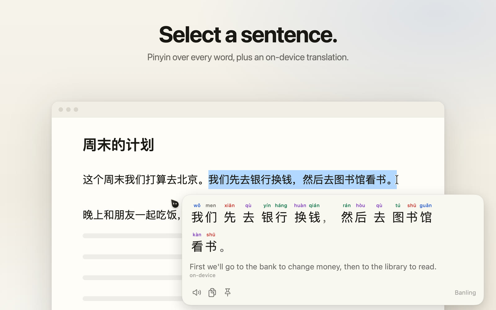
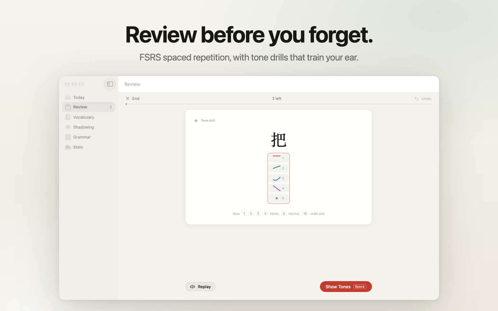

Rest your pointer on Chinese in any app and a small card shows the word with pinyin, tone colours and English meanings, plus the whole sentence translated on your Mac. Select a sentence for pinyin over every word. Save what's new and review it later in Study. Mò, a little ink drop, follows your pointer and reads along with you.


Getting started
- Open Banling. It lives in the menu bar (the ink-drop icon), not in the Dock.
- Allow Accessibility when asked (System Settings → Privacy & Security → Accessibility). Banling needs it to read the text under your pointer.
- Rest the pointer on a Chinese word for a moment. Hold ⇧ to open the card into the study view, or select a sentence for pinyin over every word.
Shortcuts
| Shortcut | Action |
|---|---|
| ⌃⌥H | Turn Banling on or off |
| ⌃⌥J | Read what's under the pointer now (uses OCR for images) |
| ⌃⌥S | Open Study |
| ⌃⌥A ⌃⌥D ⌃⌥C ⌃⌥P ⌃⌥K | Speak, Save, Copy, Pin, Mark known (while a card is showing) |
| ⇧ (hold) | Expand the card |
| Esc | Close the card |
You can change them in Settings → Shortcuts.
Questions
No card appears.
Check that Banling is on (⌃⌥H) and that it's allowed under System Settings → Privacy & Security → Accessibility. If you just updated the app, switch it off and on again in that list.
It doesn't read text in images or some apps.
Allow Screen Recording (System Settings → Privacy & Security → Screen & System Audio Recording), then press ⌃⌥J over the text. macOS may ask you to relaunch Banling first.
The translation line says a download is needed.
Open Banling's Settings → Reading and download Apple's Chinese → English language pack. It's a one-time download.
Is my reading private?
Yes. The dictionary, text reading, OCR, speech and translation all run on your Mac. Nothing you read leaves it unless you press Explain, an optional feature that uses your own Anthropic API key. Read the privacy policy.
Can I take my words to Anki?
Yes. In Study → Vocabulary, use Export for Anki. You can also back up and restore everything from Settings.
Contact
Questions, bugs or ideas: kenrich.heavenly@gmail.com
Please include your macOS version and, for a reading problem, the app you were reading in.